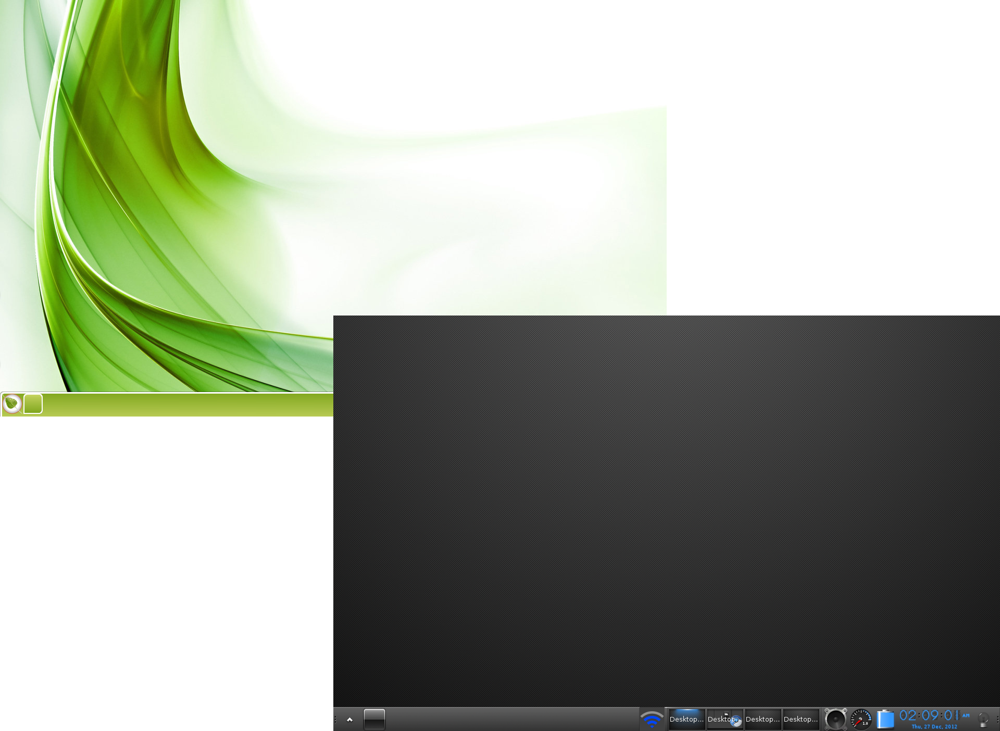

[cliqui una imatge per ampliar]

Els escriptoris virtuals permeten organitzar les tasques
Segons el perfil que hagi sel·leccionat durant la configuració inicial pot disposar o no, d'un giny paginador en el seu escriptori. Independentment d'això, vostè disposa igualment d'escriptoris virtuals. Els escriptoris virtuals són molt pràctics per organitzar, ja que li permeten mantenir aplicacions d'un mateix tipus agrupades en un escriptori i les d'un altre tipus en un escriptori separat.
Una imatge a l'escriptori mostra tots els escriptoris que s'estan utilitzant, i cadascún d'ells amb una imatge més petita representa les aplicacions que s'hi estan executant.
Hi ha diferents formes de canviar d'escriptori:
- Si disposa del giny paginador, només cal cliqui sobre l'escriptori amb el que vol treballar.
- Utilitzi la drecera de teclat: Ctrl+Alt + <teclaCursor> , en la direcció cap on es vol moure d'escriptori.
- Triï l'escriptori que desitgi mitjançant Menú>Escriptori>Escriptoris virtuals.

A tot l'escriptori hi pot trobar el menú.
Un clic a qualsevol lloc buit de l'escriptori farà aparèixer el menú principal, des d'on es poden llançar aplicacions, ajustar configuracions, apagar el sistema, i moltes més coses. Això serà l'habitual en qualsevol primera instal·lació de Bodhi. La majoria d'usuaris ho considera addient però per a qui no els hi agradi, la drecera de ratolí, botó-esquerra que està assignada a "Mostra el menú principal", pot ser fàcilment configurada/eliminada a: Menu>Preferències>Tot>Entrada>Dreceres ratolí, per qualsevol altra drecera de ratolí o cap.
Si clica el botó dret en un espai buit de l'escriptori farà aparèixer el menú de favorits. Com que no hi ha aplicacions favorites en la primera instal·lació de Bodhi, el menú de favorits no apareixerà fins que vostè hi afegeixi les seves aplicacions favorites a: Menu>Preferències>Tot>Aplicacions>Aplicacions preferides

Molts ginys mostren informació del sistema
Molts ginys són elements que mostren informació del sistema, com ara nivell de bateria, hora, etc. Els ginys també li permeten interactuar d'alguna forma amb el sistema, com ara ajustar el volum. Els ginys ofereixen una àmplia varietat de funcions. La majoria de ginys poden aparèixer en diferents llocs, com ara en taulers (vegi la secció Taulers) o bé directament a l'escriptori.
Es poden trobar o afegir a l'escriptori mitjançant:
Menú>Escriptori>Canvia ginys
(mètode simple)
i
Menú>Preferències>Ginys (més avançat)

Disposi de ginys mitjançant els mòduls
Per tal de que el giny estigui disponible ha d'estar activat el seu mòdul respectiu. En poques paraules, els ginys són una instància en ús d'un mòdul. Bodhi disposa d'una selecció àmplia de mòduls instal·lats per defecte, però encara en pot instal·lar més mitjançant Bodhi AppCenter i el Gestor de paquets Synaptic.
Pot activar/desactivar Mòduls a Menú>Preferències>Mòduls.

{kind=link}
Temes que s'adapten al seu estil
Bodhi permet triar diferents temes.
Pot seleccionar el que li agradi més amb Menú>Preferències>Temes. Els artistes de Bodhi han creat molts més temes i fons de pantalla, que pot veure i descarregar a través de la nostra pàgina web Bodhi Art.
(Vegi: Recursos)
També pot descarregar temes amb el Gestor de paquets Synaptic, que es troba a Menú>Aplicacions>Preferències>Gestor de paquets Synaptic, fent una recerca amb el filtre ràpid del text "bodhi theme". Si ho prefereix, seleccioni el paquet "bodhi-theme-pack" per instal·lar tots els temes disponibles dels dipòsits de programari Bodhi. Hi ha un munt d'opcions i de possibilitats!
Perfils - Una bona opció de Bodhi Linux
A partir de la seva instal·lació Bodhi Linux li ofereix el conjunt dels perfils més habituals. El perfils permeten controlar el disseny que tindrà l'escriptori i els ginys que hi haurà per defecte. Li ofereixen un bon disseny de partida, amb ginys activats segons el tipus de perfil que seleccioni (ex. Laptop disposa del giny de bateria, però Desktop no) o segons la forma com vostè vulgui utilitzar l'ordinador. També hi ha perfils més divertits o també disposa d'un perfil fet a mida de tablets i dispositius tàctils. Després pot modificar-los de la forma que més li agradi amb ginys addicionals i també creant el seu propi perfil!
Vagi a Menú>Preferències>Tot>Preferències>Perfils, on vostè podrà seleccionar el perfil que més li convingui, així com desar el seu propi perfil modificat.
Taulers - Gestioni ginys, llançadors,..
E17 ofereix taulers per gestionar els seus ginys i llançadors. La majoria de ginys que tenen el seu respectiu mòdul activat podran afegir-se a un tauler. També pot optar per tenir múltiples taulers a qualsevol lloc de l'escriptori. Per gestionar la quantitat de taulers que té i la seva posició/tamany (entre altres paràmetres) vagi a Menú>Preferències>Taulers. Per gestionar el contingut d'un tauler, només cal que faci clic al botó dret del ratolí damunt del tauler i seleccioni Continguts.

{kind=link}
Enrotllar - L'alternativa a minimitzar
Vol apartar una finestra de la seva vista però no la vol minimitzar a la barra de tasques? Enrotlli-la! Faci doble clic a la barra de títol de qualsevol finestra per enrotllar-la, i un altre doble clic per desenrotllar-la una altra vegada.
La imatge del cantó mostra dues instàncies de LXTerminal, una que està enrotllada i l'altra que no. (LXTerminal és actualment el terminal per defecte de Bodhi)
Algunes dreceres interessants:
Les Dreceres es classifiquen segons l'entrada. Aquesta és la seva classificació:- Dreceres cantonada (cantonades de la pantalla)
- Dreceres teclat (teclat)
- Dreceres ratolí (ratolí+tecla)
- Dreceres ACPI (esdeveniments)
Alt+<botó esquerre>
(ratolí)
permet fer clic a qualsevol lloc de la finestra
per agafar-la i reposicionar-la
<botó esquerre> (ratolí)
en una part buida de l'escriptori, obrirà el menú principal
<botó dret> (ratolí)
en una part buida de l'escriptori, obrirà el menú de
favorits
Ctrl+Alt+X (teclat)
Tanca la finestra
Ctrl+Alt+<TeclaCursor> (teclat)
canvia l'escriptori virtual en la direcció escollida
Ctrl+Alt+M (teclat)
fa aparèixer el menú principal
Shift+F10 (teclat)
maximitza verticalment una finestra
Alt+Shift+F10 (teclat)
maximitza horitzontalment una finestra
Alt+Tab (teclat)
canvia entre finestres del mateix escriptori
Podeu trobar i configurar totes les dreceres a:
Menú>Preferències>Tot>Entrada
*Nota: per més
informació sobre dreceres, cliqui aqui.
Guia Bodhi per a Enlightenment
Per oferir-li una guia més detallada sobre l'ús i la personalització d'E17, hem creat "Guia Bodhi per a Enlightenment". A partir de la versió 1.2.0 de Bodhi Linux, la guia es troba instal·lada localment com un document HTML:file:///usr/share/bodhi/e17guide